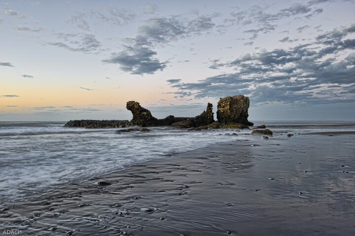
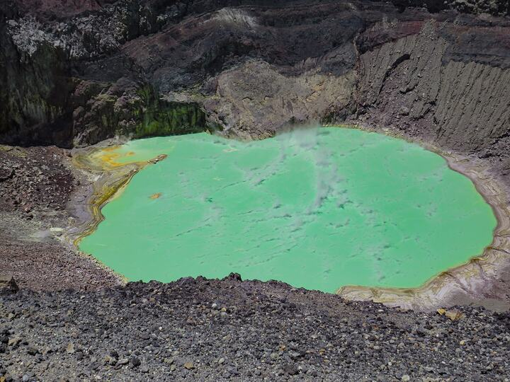
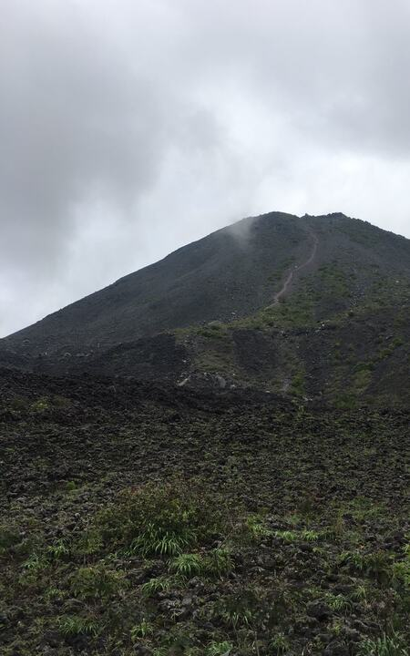
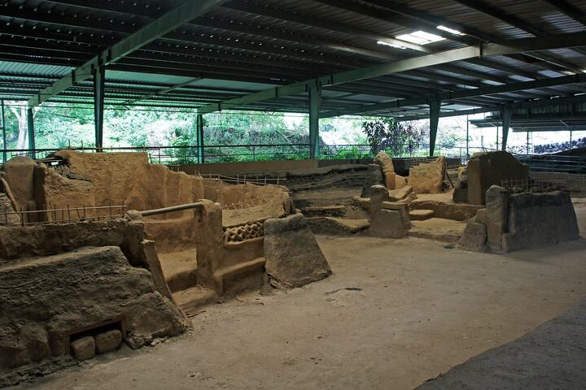
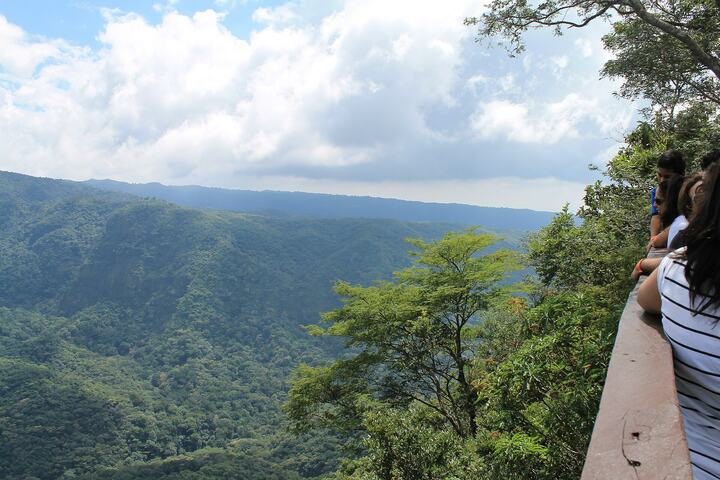
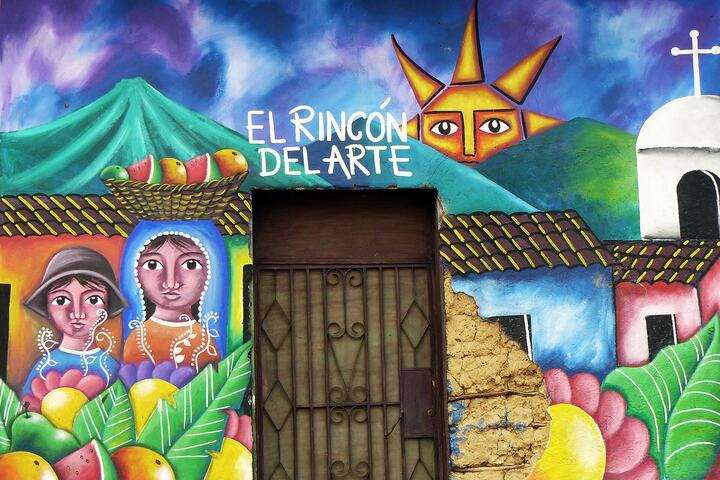
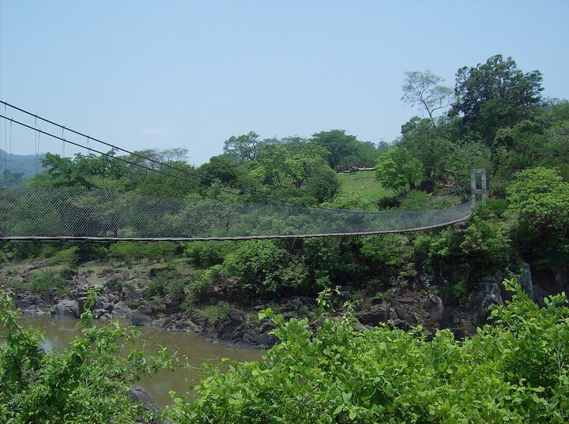
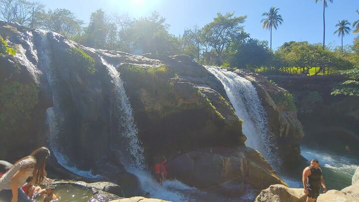

Destinos Increíbles
Descubre los lugares más espectaculares de El Salvador, desde playas paradisíacas hasta volcanes majestuosos

Playa El Tunco
La Libertad
El epicentro del surf en El Salvador. Olas consistentes, ambiente relajado y una vibrante vida nocturna hacen de El Tunco el destino perfecto para surfistas y viajeros que buscan aventura.
Actividades
- Surf para todos los niveles
- Clases de surf con instructores certificados
- Vida nocturna y restaurantes
- Caminatas por la costa rocosa
Hospedaje
- Hostels desde $15/noche
- Hoteles boutique $50-80/noche
- Casas de huéspedes familiares
Playa Las Flores
San Miguel
Una joya escondida conocida por sus olas de clase mundial y ambiente más tranquilo. Perfecta para surfistas experimentados y aquellos que buscan escapar de las multitudes.
Características
- Olas de derecha e izquierda
- Surf break de calidad internacional
- Ambiente más relajado y natural
- Excelente para fotografía

Volcán de Santa Ana (Ilamatepec)
Santa Ana
El volcán más alto de El Salvador con 2,381 metros. Su cráter alberga una impresionante laguna de azufre de color turquesa que cambia de tonalidad según las condiciones atmosféricas.
Información de Senderismo
- Duración: 4-6 horas (ida y vuelta)
- Dificultad: Moderada a difícil
- Mejor época: Noviembre a Abril
- Guía obligatorio por seguridad
Qué llevar
- Zapatos de senderismo
- Agua abundante (3+ litros)
- Protector solar y sombrero
- Cámara para la laguna del cráter

Volcán de Izalco
Sonsonate
Conocido como el "Faro del Pacífico" por su actividad pasada. Su forma cónica perfecta y el desafío de su ascenso lo convierten en una experiencia única para aventureros.
Datos Importantes
- Altura: 1,950 metros
- Última erupción: 1966
- Superficie de ceniza volcánica
- Vistas panorámicas espectaculares

Joya de Cerén
San Juan Opico
Conocida como la "Pompeya de América", este sitio arqueológico preserva una aldea maya precolombina sepultada por ceniza volcánica hace 1,400 años.
Lo que verás
- Estructuras domésticas preservadas
- Artefactos de uso diario
- Sistemas agrícolas antiguos
- Museo con exhibiciones interactivas
Información práctica
- Tours guiados en español e inglés
- Duración: 2-3 horas
- Abierto martes a domingo
- Centro de visitantes con café

Suchitoto
Cuscatlán
Pueblo colonial de adoquines y casas coloridas, considerado la capital cultural de El Salvador. Rica en arte, historia y tradiciones culinarias.
Atracciones culturales
- Centro histórico colonial
- Iglesia Santa Lucía (siglo XVIII)
- Galerías de arte local
- Festival de Arte y Cultura (febrero)
Gastronomía típica
- Pupusas de arroz únicas
- Yuca frita con chicharrón
- Quesadilla salvadoreña
- Café de altura local

Parque Nacional El Imposible
Ahuachapán
El parque nacional más grande de El Salvador, hogar de la mayor diversidad biológica del país con bosques tropicales y especies endémicas.
Biodiversidad
- Más de 400 especies de aves
- Jaguares, pumas y ocelotes
- Orquídeas y plantas medicinales
- Bosque seco tropical único
Senderos principales
- Sendero El Imposible (8 km)
- Sendero Cerro León (4 km)
- Sendero Los Enganches (6 km)
- Tours nocturnos para ver fauna

Ruta de Las Flores
Sonsonate - Ahuachapán
Una ruta escénica de 36 km que conecta pueblos pintorescos conocidos por su cultura cafetera, artesanías y arquitectura colonial.
Pueblos destacados
- Nahuizalco - Artesanías de tule
- Salcoatitán - Gastronomía típica
- Juayúa - Festival gastronómico
- Apaneca - Café de altura
- Ataco (Concepción) - Arte urbano
Modalidades de viaje
- Auto rentado (recomendado)
- Tours en bus organizados
- Ciclismo de montaña
- Caminatas entre pueblos
Joyas Escondidas
Destinos menos conocidos pero igualmente espectaculares

Laguna Verde
Apaneca, Ahuachapán
Lago cratérico de aguas termales rodeado de vegetación exuberante

Puentes Colgantes
Río Torola, zona oriental
Aventura entre las copas de los árboles con vistas panorámicas

Cascadas Escondidas
Malacatiupán, Atiquizaya
Piscinas naturales perfectas para un refrescante chapuzón